精灵图制作
精灵图制作是 Mindustry 模组开发中不可或缺的一环；没有它，你做的任何东西都会显示为缩放糟糕的「oh no」图片。
Mindustry 的精灵图风格简单却非常严格；在其他游戏中可以蒙混过关的做法，放到 Mindustry 里就会显得格格不入。
你可以在这里找到所有原版精灵图。
请注意，未经许可使用其他模组作者的精灵图是不被允许的，不过你可以将它们用于获取灵感或作为参考。
诸如「这个模组是开源的，我想怎么用就怎么用」之类的理由，将不会被承认或容忍，你的模组会被加入模组浏览器的黑名单。
精灵图制作软件
强烈建议你使用支持透明通道并以 .PNG 格式导出图像的精灵图制作软件。以下是一份推荐软件列表。
桌面端
- Aseprite
业界标杆。有一点学习曲线，但一旦习惯就非常简单。
-
它是付费软件，但你可以自行编译源代码。请购买许可证以支持其开发者。
-
有许多对 Mindustry 精灵图制作有用的功能，例如： 镜像
-
调色板控制
-
动画
-
图层（也可单独导出各图层）
-
LibreSprite
Aseprite 仓库的一个分支，不如 Aseprite 那么新、那么强大，但用于制作 Mindustry 风格的精灵图应该没问题。
- Piskel
一款简单直接的像素画软件，不如 Aseprite 或 LibreSprite 强大，但足够用。它有一个在线版和一个可离线下载的版本，功能相同。
-
无法单独导出各图层
-
Pixilart
一款在线精灵图制作工具，功能比 Piskel 多，但缺少镜像工具。如果你更熟悉 pixilart，就用它而不是 piskel。
-
对于制作 Mindustry 风格的精灵图来说相当臃肿。
-
Paint.NET
非常基础的绘画软件（不要与 Paint 3D 混淆）。Paint.NET 可以用，但不如上面提到的软件方便。
-
Paint.NET 缺少制作 Mindustry 风格精灵图所需的基本功能。你可以通过插件获得其中一些缺失的功能。
-
话虽如此，为了便利起见并不推荐使用它。如果你能下载 Paint.NET，那你大概也能下载 Piskel 或 LibreSprite，它们才是为像素画设计的。
移动端
- Novix Pixel Editor
古老而可靠，由 Anuke 制作（后被弃置）。它简单、无广告，尽管年代久远，对移动端用户来说仍是一款可靠的精灵图制作工具；它还支持镜像工具。
-
制作较大的精灵图时偶尔会出问题。
-
Pixel Studio
最受欢迎的像素画应用之一。
-
拥有你需要的大部分功能，还能与其 PC 版联动。
-
有广告
-
Ibispaint X
并非为精灵图制作而设计，使用前需要更改一些设置。
-
支持各种工具，如八向镜像、泛光和渐变，以及区域选择和图层等基本功能。
-
可以轻松制作复杂的精灵图，但对简单精灵图来说可能过于臃肿。
-
同样有广告
尺寸
方块
你能制作的最小方块精灵图是 32px × 32px，即 1×1 的方块。制作更大的方块意味着精灵图尺寸再增加 32px，所以 2×2 的方块是 64 × 64，依此类推。这同样适用于炮塔和方块。
-
1×1:32px × 32px -
2×2:64px × 64px -
3×3:96px × 96px -
4×4:128px × 128px -
5×5:160px × 160px
你并不局限于这些尺寸；游戏仍会加载比推荐尺寸更大或更小的精灵图，这可能产生外观独特的精灵图，也可能是一场灾难。
物品、液体、状态
对于这些内容类型，最小精灵图尺寸是 32px；你可以使用更大的图像，但游戏会将其压缩到 32px。游戏不会放大更小的图像，因此 32px 就是最小值。
单位
单位精灵图的尺寸要求比其他内容更宽松，但尽量不要低于 48px。你的单位越大，就越需要调整它们的 hitSize（碰撞箱尺寸）。
精灵图的存放
如果是 HJSON 模组，可以把精灵图放进模组的 sprites/ 子目录；如果是 Java 模组，则放进 src/assets/sprites/。内容解析器会递归查找。
图像会被打包进「图集」以提高渲染效率。sprites/ 下的第一层目录（例如 sprites/blocks）决定精灵图进入图集的哪一页。把方块的精灵图放进 units 文件夹很可能导致严重卡顿；因此建议参照原版游戏的组织方式。
游戏会依据内容名称查找精灵图。content/blocks/test-turret.json 的名称为 test-turret，同样 sprites/test-turret.png 的名称也是 test-turret，因此会被该内容使用。
- 方块应存放在 sprites/blocks
- 单位应存放在 sprites/units
- 物品应存放在 sprites/items
游戏会修改某些精灵图。炮塔和单位会被加上 3-4px 的灰色边框，因此制作精灵图时必须考虑到这一点，在炮塔周围留出空间。默认的描边半径和颜色可以通过修改 Block 和 UnitType 类中的 outlineRadius / outlineColor 字段来自定义。
覆盖
覆盖现有精灵图是可行的；为此，必须把精灵图放在 sprites-override/。
后缀
游戏也可以为单个方块查找多张精灵图。
对于炮塔，游戏可能会查找后缀 -heat（test-turret-heat.png）。
对于方块以及合成器/冶炼厂，游戏可能会查找 -top 和 -liquid，这将在各自的章节中说明。
你可以阅读各个方块类的源代码，了解它们能加载哪些精灵图以获取更多细节。参见带有 @Load 的行。
对于模组中的精灵图，请检查方块类中的每个 load() 方法（如果有的话）。
调色板
和市面上每款游戏一样，Mindustry 有自己的调色板。对于新手，强烈建议你的精灵图坚持使用这些特定的颜色，否则轻则显得格格不入，重则甚至会被视为异端。这可能会在 Discord 的 #spriting 频道引起极大的骚动。
方块调色板：
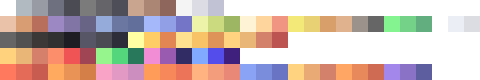
环境调色板
假设你已经正确获取了合适的精灵图制作软件，你应该能够下载这些图片并把它们用作调色板。
风格与明暗
Mindustry 有着简单却严格的美术风格。在其他游戏中可能行得通的做法，在 Mindustry 里会显得格格不入。因此，我们制定了这些准则，帮助模组作者制作能融入游戏的精灵图。
Mindustry 是一款 2D 游戏，因此要表现凸起和凹陷之类的纵深感，我们需要用到一种叫做「明暗处理」的技巧。尽管素材实际上是 2D 图像，这一技巧却能让它在游戏里看起来有 3D 效果。
根据光照方向，凸起用亮色调表示，平坦区域用中间色表示，凹陷用暗色调表示。先在脑海中想象物体的 3D 形态，再以 2D 方式画出来，通常是在 Mindustry 中制作精灵图的好方法。
这只是一条准则，但如果你在尚未成功做出 Mindustry 精灵图之前就随意违背它，你很可能会创作出一个怪物，而 #spriting 频道可不会高兴。
方块明暗
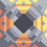
我们以 Surge Smelter 为例。
对于方块，光源位于右上角附近，阴影位于左下方。右上角靠近光源的像素应为浅色。同样，左下角的像素应为深色。最好用一条穿过中心的斜线将二者分开。
大多数方块有 3 种颜色类型：
- 基色，有 3 种色调：
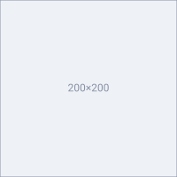
B0BAC0 | 亮色调
-
989AA4| 中间色 -
6E7080| 暗色调 -
贴花颜色，同样有 3 种色调：
FEB380 | 亮色调
-
EA8878| 中间色 -
BC5452| 暗色调 -
底部颜色
4a4b53
基色代表方块的主色。建议合成器只使用灰色调，就像所有原版合成器那样。
贴花颜色是你方块上的点缀色。它代表方块的角色或用途，也是区分不同方块的一种方式。要挑选用于方块的贴花颜色，你应当思考方块的用途。例如：
塑钢压缩机
Plastanium Compressor 有绿色的贴花。这种绿色贴花与塑钢（plastanium）颜色相同。因此，仅凭外观你就能看出这个方块与塑钢有关联。
底部颜色代表方块的内部，即光照不到的地方，因此应该非常暗。例如，它可以表示带有烟囱的方块的底部，如 Surge Smelter。
请注意，不同类型的方块需要不同数量的图层；例如，墙体只需要 1 个图层，也就是精灵图本身，而像重构器这样的方块最多需要 4 个。参见#后缀。
模组示例：
- 来自 DiverseTech 的 Unit Bunker，作者 Flin#8261
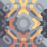
- 来自 Unlimited Armament Works 的 Surge Mixer，作者 Geschiedenis #4783
炮塔明暗
对于炮塔的明暗处理，光源位于右侧，阴影位于左侧。
本部分我们将以「Ripple」为例。
炮塔一般有 2 到 3 种颜色类型，每种有 2 种色调：
-
基色
-
7B7B7B| 亮色调 -
4D4E58| 暗色调 -
贴花颜色
-
FEB380| 亮色调 -
EA8878| 暗色调 -
[可选] 炮管孔颜色
-
2C2D38
基色（或称机身颜色）是炮塔的主色。它可以是经典的铜棕色、白色、深灰色，或（取自调色板的）自定义颜色。
- 铜棕色
-
通常代表低阶炮塔，例如 Duo、Scorch、Hail 等。
-
C9A58F -
8F665B -
白色
-
通常代表使用电力而非物品来射击的炮塔，例如 Arc、Lancer、Parallax、Segment。
-
F4F4F4 -
C1C3D4 -
深灰色
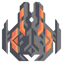
-
在大多数情况下，深灰色代表中高阶炮塔。
-
7B7B7B -
4D4E58
炮塔的贴花颜色与普通方块相同；它是一种点缀色，可以代表炮塔的角色、用途或类型。例如，如果你想把自己的炮塔分成不同类别，可以用贴花颜色来区分它们。
炮管孔是炮塔的一种可选颜色，代表炮塔的炮管孔；通常用于火炮炮塔或导弹发射器。
-
2C2D38
非常规方法
- 炮塔中间色
一种相对较新且非常规的方法是：在炮塔精灵图中加入中间色，使其看起来像有平坦的表面，而不仅仅只有亮色调和暗色调。
-
其中一个例子是来自 Unlimited Armament Works 的「Skyhammer」
-
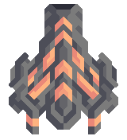
资源明暗
资源明暗处理相当简单，其光照可以来自顶部两角、从上到下或从右到左。
资源精灵图应只使用一种颜色的 2 或 3 种色调。确保精灵图看起来有立体感而非扁平，否则它会像纸片一样突兀。
示例：
单位明暗
单位通常是最难做明暗处理的。
对于较大的单位，明暗处理会变得相当复杂。在单位明暗处理中，光照来自从上到下或从前到后。亮色调和暗色调的强度会因你正在处理的单位部位而不同。
对于单位，亮色调代表凸起，中间色代表平坦区域，暗色调代表凹陷。
单位基色
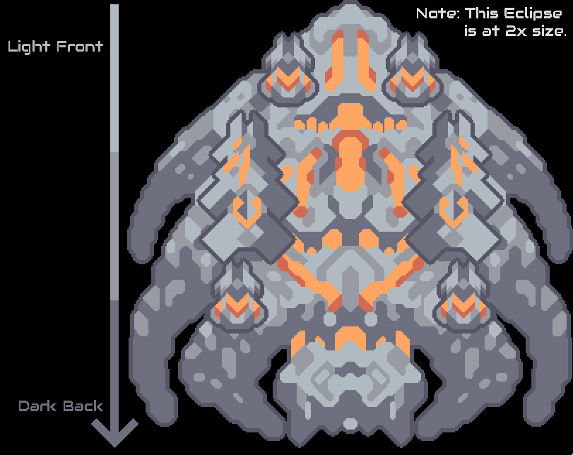
本示例使用 Eclipse，因为它是原版最复杂的单位。随着你不断向背面推进，亮色调会减少，中间色和暗色调会增多。
被光照到的部位色调较亮，未被照到的部位色调较暗；平坦区域则为中间色。
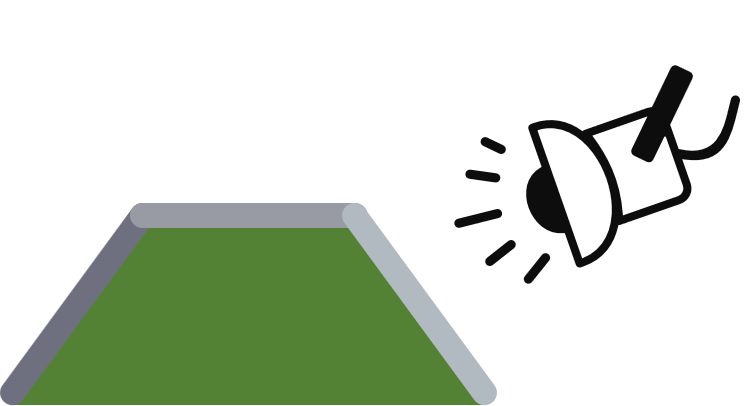
上图是把单位想象成 3D 时的粗略示意图。
-
基色，一如既往有 3 种色调：
-
B0BAC0| 亮色调 -
989AA4| 中间色 -
6E7080| 暗色调
单位贴花颜色
单位贴花颜色只有 2 种色调：亮和暗。该颜色代表单位在游戏中的角色。
-
黄色代表核心单位，由核心生产。
-
FFD37F | 亮色调
-
D4816B| 暗色调 -
橙色代表突击单位，其职责是攻击你的对手。
-
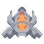
FFA665 | 亮色调
-
D06B53| 暗色调 -
绿色代表支援单位，它们能够建造、治疗并为你方单位提供护盾。
-
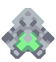
84F491 | 亮色调
-
62AE7F| 暗色调 -
紫色代表 ~~spooder~~ 专家单位，它们负责其他事务。
-
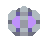
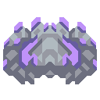
BF92F9 | 亮色调
-
665C9F| 暗色调
你可以自由挑选任何你喜欢的颜色，只要它出现在多个单位上，并且与调色板中的其他颜色协调即可。
单位单元格/队伍颜色
单位单元格（Unit Cell）是用于区分不同队伍单位的精灵图；它们是单独加载在单位之上的精灵图。
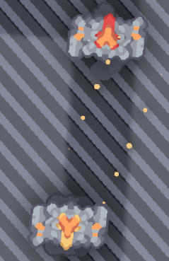
上图是一个带单元格的 fortress。游戏会自动把白色（#FFFFFF）和棕褐色（#DCC6C6）替换为队伍颜色的各种色调。你的单元格精灵图应只包含以下两种色调：
-
FFFFFF| 亮色调 -
DCC6C6| 暗色调
强烈推荐使用能够使用图层并单独导出图层的精灵图制作软件，因为你可以在同一个文件中把单位本体和单元格画在不同的图层上。
单位武器
单位武器遵循与炮塔和单位明暗处理相同的规则；它们可以从从上到下或从右到左进行明暗处理。
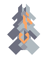
武器的旋转基于精灵图的中心；如果你想移动武器的旋转点，就必须移动精灵图。
单位精灵图制作阶段
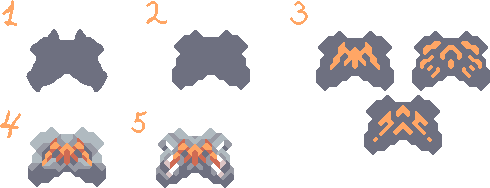
绘制单位的过程大致可分为 5 个阶段：
-
大致勾画出整体形状。选一支暗色调的粗笔刷来涂画，慢慢地把线条一层层叠加，形成不太精确的基本形状。尽量让它们略微变形或弯曲，并确保形状看起来美观——在大多数情况下，糟糕的形状做不出好的精灵图，所以在继续之前请确保你满意。
-
细化形状，用 45 度角的线条来构建它。你可能想调整边缘，但不要过于拘泥于你已经画好的草稿。
-
添加贴花。这一步很棘手，因为贴花很难画好。我展示了 3 个可行的示例——不过你应该自己去尝试，看看哪种最适合你。之所以现在添加更好，是因为之后你就能围绕贴花「构建明暗」，使进入第 5 阶段时更容易。
-
大致标出较亮和较暗的部分。由于光来自顶部，你可以并且应该马上标出你想让哪些形状受光最少或最多，以免自己过度纠结。不要覆盖太多面积，因为精灵图大约 30-40% 应该是暗色调。另外注意，贴花周围的区域应保持较暗，以增强对比度，让它更赏心悦目。
-
迄今为止最复杂的部分——「添加细节」。你没有什么捷径可走，只能把这一步练好。不过有一个我自己在用的技巧：当不确定该添加什么时，就在那里加单元格。它们可以像额外的贴花一样起作用，你也许想围绕它们来构建形状。不要添加过多细节，并利用任何方便的边角或平板来雕琢出新的形状。
作者 Zhenьkotron#9493，校对 Geschiedenis#4783，语法修正 BalaM314#4781。
描边
在炮塔精灵图和单位精灵图的边缘周围留出 4 像素的空间，因为游戏会用这个空间自动添加描边。
环境精灵图
环境精灵图与 Mindustry 精灵图风格的其余部分略有不同，即不适用 45° 递增规则。
环境精灵图会占据 Mindustry 游戏的绝大部分（即便不是大多数），因此，让你制作的精灵图足够含蓄、即使被反复平铺也依然好看，是对你最有利的。
地板
地板只有 2 种色调，变体数量由你决定。
- 原版示例：
-
-
模组示例：
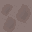
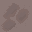
精灵图由来自 Endless-Rusting 的 Sh1penfire#0868 制作
静态墙体
不要与可建造的防御建筑混淆，环境墙体有 3 种色调，并且和地板一样，变体数量由你决定。
墙体还有一个可选的 2x2 版本，它会与 1x1 墙体随机混合出现。
-
原版示例：
-
模组示例：
精灵图由来自 Endless-Rusting 的 Sh1penfire#0868 制作
矿石
矿石会叠加在地板之上，因此它们在可能被放置的所有地板材质上都应显得协调。
-
原版示例：
-
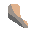
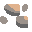
-
模组示例：
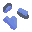
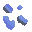
-
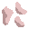
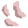
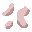
精灵图由来自 Endless-Rusting 的 Sh1penfire 制作
道具
道具（或称巨石）是玩家可破坏的环境方块，会随机出现在地板上；它们有自己独立的文件，与环境精灵图分开。
- 示例：
树木
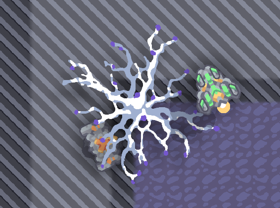
树木绘制在大多数类型的方块之上；单位也可以穿过它们，它们只是地图上额外的植被。
请记住，树木尤其有阴影精灵图，你必须手动制作它们。
- 示例：
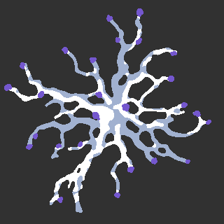